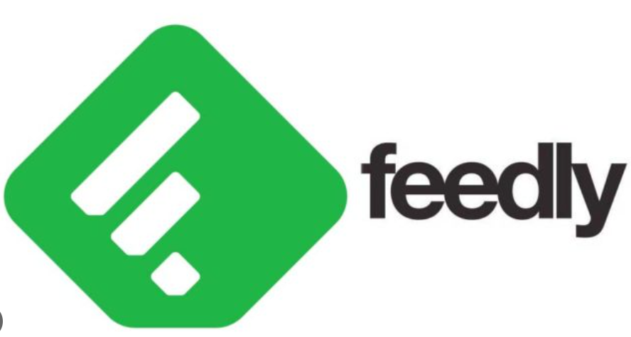

La veille informatique est un élément essentiel dans mon cœur de métier. J'en réalise régulièrement sur différents sujets afin de me tenir informé des dernières évolutions technologiques, des nouvelles pratiques et des innovations du secteur. Elle me permet d'actualiser mes connaissances en continu et de constamment améliorer mes compétences professionnelles.
Pourquoi faire une veille ?
Éviter l'obsolescence
Ne pas prendre de décisions sur des informations ou des technologies obsolètes.
Rester à jour
Mettre en place des solutions d'actualité, à jour et adaptées aux besoins d'aujourd'hui, plutôt que de reproduire des pratiques anciennes.
Progresser
Découvrir de nouveaux outils, de nouvelles méthodes et de nouveaux standards pour monter en compétences en continu.
Les outils de ma veille

Agrégateur RSS
Feedly : je centralise en un seul endroit les flux des sites et blogs que je suis, sans avoir à les visiter un par un.
Podcasts
RDV Tech, 401 Tech Café et d'autres : des formats audio pour suivre l'actualité tech en déplacement.
Mail & newsletters
Newsletters spécialisées reçues dans une boîte dédiée (voir la technique ci-dessous).
Réseaux sociaux
LinkedIn : suivre des professionnels, des entreprises et des experts du réseau et de la cybersécurité.
Ma technique : une boîte mail dédiée aux newsletters
Pour ne pas me disperser, j'ai créé une adresse mail uniquement pour ma veille : veille.1nfo21. Tout ce qui concerne la veille arrive là, et nulle part ailleurs.
Créer un mail dédiéUne adresse à part, utilisée uniquement pour s'abonner aux newsletters et aux sources de veille.
Définir un jour fixeJe réserve un jour précis dans la semaine pour traiter ma veille, sans la laisser s'accumuler.Voir mon emploi du temps
Trier les mailsJe parcours la boîte, je garde les articles intéressants et je supprime le reste.
Toutes les newsletters sont regroupées au même endroit.
Aucune distraction : pas de mélange avec les mails personnels ou scolaires.
Une routine claire qui rend la veille régulière.
Mes dossiers de veille
Wi-Fi 7 (IEEE 802.11be)
Le Wi-Fi 7, aussi appelé Extremely High Throughput (EHT), succède au Wi-Fi 6 et 6E. Il vise plus de débit, mais surtout moins de latence et une meilleure fiabilité.
320 MHzlargeur de canal max., contre 160 MHz en Wi-Fi 6
4096-QAM12 bits par symbole, contre 10 en Wi-Fi 6 (≈ +20 % de débit)
46 Gbit/sdébit théorique maximal, contre 9,6 Gbit/s en Wi-Fi 6
Janv. 2024lancement du programme Wi-Fi CERTIFIED 7
Les nouveautés techniques
Multi-Link Operation (MLO)
Le client et le point d'accès (« Multi-Link Device ») utilisent plusieurs bandes ou canaux (2,4 / 5 / 6 GHz) en même temps. Résultat : davantage d'opportunités d'accès au canal, une latence réduite, et la possibilité de dupliquer le trafic critique sur plusieurs liens. Plusieurs modes existent : EMLSR, STR, NSTR, EMLMR.
Canaux de 320 MHz
La largeur de canal double, mais uniquement dans la bande 6 GHz. C'est le principal levier de débit… et celui qui dépend le plus de la réglementation de chaque pays.
Modulation 4096-QAM
Chaque symbole transporte plus de données. Le gain n'est réel que si le signal est excellent : en pratique, à courte distance et avec peu d'interférences.
Multi-RU & préambule puncturing
Un même client peut recevoir plusieurs unités de ressources (Multi-RU), et le spectre reste exploitable quand une portion du canal est perturbée (puncturing). On gaspille moins de bande passante.
QoS renforcée
Le Stream Classification Service (SCS) aide à prioriser les flux sensibles (visioconférence, VoIP, réalité virtuelle) par rapport au trafic « best effort ».
Sécurité WPA3
Le Wi-Fi 7 s'appuie sur WPA3, ce qui pousse à abandonner progressivement WPA2 sur les nouveaux déploiements.
Wi-Fi 6, 6E et 7 en un coup d'œil
Wi-Fi 6 (802.11ax)
Wi-Fi 6E (802.11ax)
Wi-Fi 7 (802.11be)
Bandes
2,4 / 5 GHz
+ 6 GHz
2,4 / 5 / 6 GHz
Largeur de canal max.
160 MHz
160 MHz
320 MHz (6 GHz)
Modulation max.
1024-QAM
1024-QAM
4096-QAM
Multi-liens (MLO)
Non
Non
Oui
Multi-RU
Non
Non
Oui
Débit théorique max.
9,6 Gbit/s
9,6 Gbit/s
46 Gbit/s
Valeurs théoriques : en pratique, le débit dépend du nombre de flux spatiaux du client (souvent 2×2 sur smartphone ou portable), de la distance et des interférences.
Et en France ? La question du 6 GHz
Ce qui est autorisé aujourd'hui
La décision ARCEP n° 2021-2184 du 14 octobre 2021 ouvre la bande 5945–6425 MHz (480 MHz) au Wi-Fi. Pour les points d'accès et les box, l'usage est limité à l'intérieur et à faible puissance (LPI).
Conséquence directe : avec seulement 480 MHz, on ne dispose que d'un seul canal de 320 MHz (ou trois de 160 MHz). La réutilisation de canaux est quasi impossible en environnement dense.
Ce qui reste en discussion
La partie haute de la bande (6425–7125 MHz), nécessaire pour multiplier les canaux de 320 MHz, n'est pas tranchée en Europe : elle est disputée entre le Wi-Fi et la téléphonie mobile, et la décision est attendue autour de la CMR-27 (fin 2027).
Au Royaume-Uni, l'Ofcom a de son côté annoncé le 20 juillet 2026 qu'il autorisait un accès étendu au Wi-Fi dans cette partie haute. L'ARCEP avait par ailleurs soumis à consultation, fin 2025, une modification de sa décision sur la bande 6 GHz.
Et après ? Le Wi-Fi 8 (IEEE 802.11bn)
Le prochain standard ne cherche pas à battre des records de débit : il garde les mêmes largeurs de canal et la même modulation que le Wi-Fi 7. Son objectif est la fiabilité (« Ultra High Reliability »), avec notamment la coordination entre points d'accès voisins. Les cibles visées par rapport au Wi-Fi 7 : +25 % de débit MAC, −25 % de latence et −25 % de paquets perdus. Le standard est encore en cours de rédaction.
Cybersécurité
Directive NIS 2 (UE) 2022/2555
NIS 2 renforce la cybersécurité en Europe en élargissant fortement le nombre d'entités concernées (« essentielles » et « importantes »). La directive est publiée depuis fin 2022, mais en France, la loi de transposition (projet de loi « Résilience ») n'est toujours pas adoptée.
17/10/2024date limite de transposition fixée par l'UE
≈ 15 000entités concernées en France, dans 18 secteurs
10 M€ / 2 %amende maximale, ou 2 % du chiffre d'affaires mondial
08/07/2026la Commission saisit la Cour de justice de l'UE contre la France
Ce que j'ai retenu
Un périmètre élargi
NIS 2 s'appuie sur NIS 1 mais touche beaucoup plus d'organisations. Elle donne aussi un cadre au réseau européen de gestion de crise CyCLONe.
Une transposition en retard
Le projet de loi Résilience, qui transpose aussi REC et le volet DORA, est déposé au Sénat en octobre 2024, adopté par le Sénat en mars 2025, puis voté en commission à l'Assemblée en septembre 2025. Il attend ensuite plus d'un an une inscription en séance.
Un contentieux européen
Mise en demeure en novembre 2024, puis renvoi devant la Cour de justice de l'UE en juillet 2026. La Cour peut imposer des sanctions financières à la France.
Le référentiel ReCyF de l'ANSSI
Publié en mars 2026, il liste les mesures recommandées pour atteindre les objectifs de sécurité de NIS 2. Non obligatoire par défaut, il permettra aux futures entités de s'en prévaloir en cas de contrôle.
Où en est-on ?
Le texte devait être examiné à l'Assemblée à partir du 7 octobre 2026, mais il a été retiré de l'ordre du jour le 6 octobre, sans nouvelle date.
Raisons : un agenda surchargé et surtout un désaccord sur l'article 16 bis (chiffrement des messageries).
Sans loi promulguée, aucune obligation légale n'existe encore en France.
Au niveau européen, la Commission a proposé en janvier 2026 des modifications ciblées pour simplifier NIS 2 et créer une catégorie de petites capitalisations.
Chronologie de mes notes
Date
Information
Source
Thème
27/12/2022
Publication de la directive NIS 2 (UE) 2022/2555 au Journal officiel de l’UE
Virtualisation : VMware après le rachat par Broadcom
Depuis le rachat de VMware par Broadcom (novembre 2023), le modèle de licences a changé en profondeur. Cela pousse de nombreuses entreprises à envisager des alternatives, notamment open source comme Proxmox VE. Mon suivi couvre les licences, le droit de la concurrence, la sécurité et le marché.
16 cœursminimum facturé par processeur depuis le changement de licences
160 → 2produits au catalogue, réduits aux offres VVF et VCF
Fin des licences perpétuelles à la vente, minimum de 16 cœurs par socket, fin de vente de vSphere Standard (juillet 2025), retrait de vSphere Foundation dans plusieurs pays d'EMEA et programme VCSP réservé aux invités.
Droit et concurrence
Le CISPE a déposé une plainte auprès de la DG Concurrence (mars 2026), puis cinq organisations ont réclamé une transition de trois ans (juillet 2026). Le Tribunal de l'UE a refusé à Broadcom les noms des fournisseurs soutenant le recours (novembre 2026).
Sécurité
Cinq failles corrigées en juillet 2026 (VMSA-2026-0006), dont une évasion de VM critique via VMXNET3 (CVSS 9.3). Une faille de vCenter est ensuite ajoutée au catalogue des failles exploitées de la CISA.
Alternatives et marché
Proxmox VE 9.2 (Debian 13.5, noyau Linux 7.0, Ceph Tentacle), projet de Tesco de passer à Proxmox dans ses magasins, et concurrents (Nutanix, Red Hat, HPE, Mirantis) qui financent la migration contre trois ans d'engagement.
La dernière actualité
Le 04/11/2026, VMware lance « vSphere Express », une offre d'entrée de gamme jusqu'à 128 cœurs, avec vMotion, redémarrage automatique des VM et distributed switch.
Elle fait suite à l'aveu, lors de VMware Explore, que l'accent mis sur VCF avait été trop fort.
Le prix n'est pas communiqué : la licence par cœur est annoncée « nettement moins chère » que VVF ou VCF.
Les prévisions de Gartner sont des évaluations (preuves de concept), pas des migrations garanties. Broadcom reste classé « Leader » de son Magic Quadrant.
Chronologie de mes notes
Date
Information
Source
Thème
22/11/2023
Broadcom finalise le rachat de VMware et change le modèle de licences